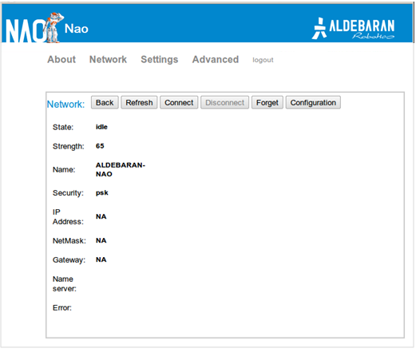
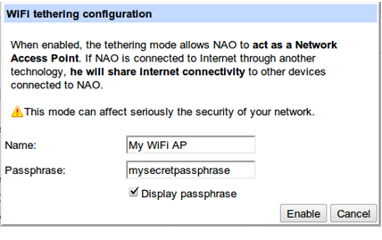
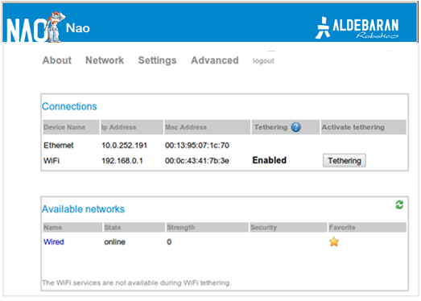
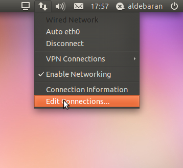
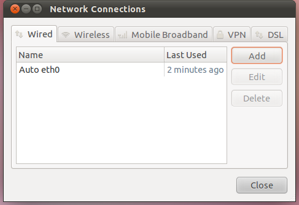
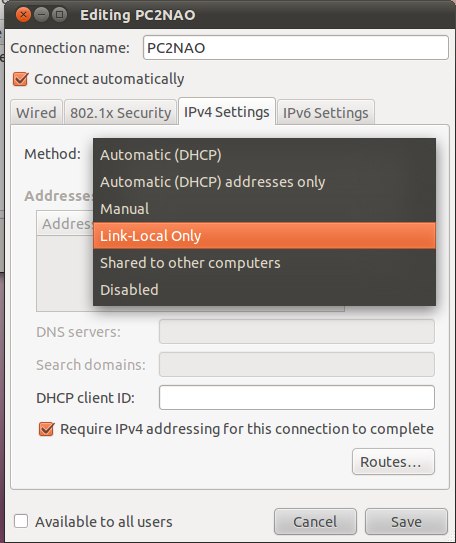
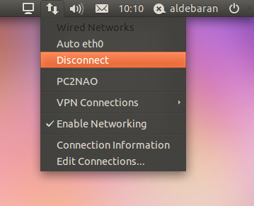
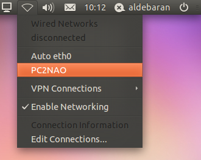
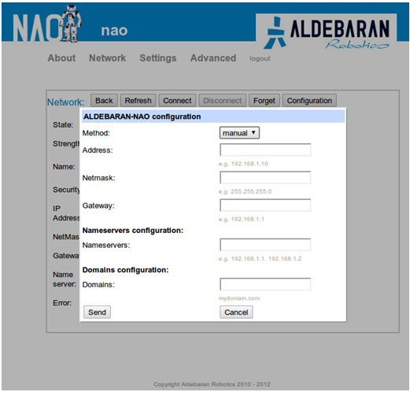

NAO Connectivity¶
WiFi standard configuration¶
| Step | Action |
|---|---|
Access and login the NAO Web page. For further details, see: How to access the NAO Web page. |
|
Choose the Network page. The following window is displayed. 
|
|
Select one of the Available networks, having one of the Supported personal securities. The chosen network is displayed.  |
|
| Keep parameters as they are and click the Connect button. | |
If prompted, enter the network password. NAO is now wireless connected and will always try to connect to this network. |
|
| Optionally, if you want to avoid automatic reconnecting to this network, click on Forget button. |
Supported personal securities¶
NAO supports WEP, WPA & WPA 2 personal securities.
Note
For WEP only the passphrase of 5 characters for WEP40 and 12 characters for WEP104 are supported, always prefer the hexadecimal representation which is the only standard.
NAO as a mobile WiFi Access Point¶
NAO can be turned into a WiFi Access Point, this could be very useful when there is no other network available.
Tethering refers to connecting one device to one other, in the case of WiFi we use the access point mode to do this.
To enable this mode:
| Step | Action |
|---|---|
Click the Tethering button on the network page.
A dialog box is open with the WiFi access point properties.  |
|
Provide the information for the Access Point Name: The name of the created WiFi network as it will appear in other devices WiFi services list. Passphrase: The WPA2 passphrase to connect to the created network. |
|
Click the Enable button. The access point is now enabled, other WiFi devices can join the created WiFi network. Warning When the WiFi hotspot is enabled on NAO, it shares its network connectivity with other devices. If NAO is connected to a corporate network on Ethernet, make sure this mode is compatible with the network security policy. The created network will be available until the next reboot or until you disable it by clicking again on the tethering button. Note Due to hardware radio limitations, when the Access Point mode is enabled it’s not possible to list other WiFi networks or to join one of them. |
Other configuration options¶
Local-Link an alternative to DHCP¶
In case of network without DHCP, it is possible to use link-local addressing. Link-Local is a standardized alternative to settings static IP address. With this feature you can obtain an address automatically, and establish a local network communication between your NAO and your computer.
If your NAO say that he got an address in the range of 169.254.X.X, the reason is haven’t discover any DHCP server and NAO has fall back to Local-Link.
Since 1.12 version you can just plug a network wire between your NAO and your PC, and obtain a communication without setting a static IP address. For MAC and Windows computer you have nothing to do to make it work, with Linux PC please verify if your network manager is set for using link-local.
How to Ubuntu and Local Link¶
| Step | Action |
|---|---|
On the nm-applet click on “Edit Connections...”.  |
|
Add a new profile to connect to NAO directly. Click on Add. |
|
Choose a nice name for your configuration here “PC2NAO”. Select the tab IPv4-Settings, and change the Method to Link-Local Only. Click on Save, and close the menu. |
|
Disconnect from the previous profile.  |
|
Activate the new profile here “PC2NAO”. Now you can plug an Ethernet wire directly between tour computer and your NAO. |
Static IP address¶
If you don’t have a DHCP server and you don’t want to use the Local-Link method, you can set manually an IP address.
WiFi¶
To set an IP address to a WiFi service, follow the Wireless configuration section, and before clicking to connect at step 4, click on “Configuration” button.
Now you can enter your static parameters.
Click on send, now you can do the last steps of Wireless configuration.
To get back to DHCP method, click again on the “Configuration” button and choose DHCP method in the list.
Ethernet¶
Warning
Aldebaran-Robotics doesn’t recommend to set an IP address on Ethernet, use the Local-Link method instead.
In case of wrong parameters you won’t be able to communicate with your NAO anymore and you will have to use the NAOFlasher with Factory reset option.
To set an IP address to an Ethernet service, access through ssh to your NAO.
nao [0] ~ $ su
root@nao [0] nao $ connman services
* Wired { ethernet_001395052c58_cable }
* ALDEBARAN-NAO { wifi_000c4321384a_414c4445424152414e2d4e414f_managed_psk }
ALDEBARAN { wifi_000c4321384a_414c4445424152414e_managed_psk }
root@nao [0] nao $ /usr/lib/connman/test/set-ipv4-method ethernet_001395052c58_cable manual \
192.168.1.100 255.255.255.0 192.168.1.1
This command set the address 192.168.1.1 with netmask 255.255.255.0 and gateway 192.168.1.1 for the Ethernet service.
To get back to DHCP method:
nao [0] ~ $ su
root@nao [0] nao $ /usr/lib/connman/test/set-ipv4-method ethernet_001395052c58_cable dhcp